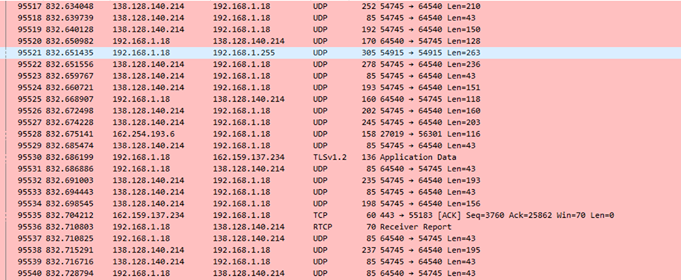

Assignment 4
For the assignment I used Wireshark to look at my ongoing internet traffic. On Wireshark I saw my connection type was IPv4 so I googled what that was and saw it was a internet security protocal. However I also discovered there was a IPv6 which is the latest security protocol which is more advanced than IPv4. The main difference I saw between the two is that IPv6 is a 128 bit binary number address compared to IPv4 which is only 32bit. IPv6 is more secure and provides more direct addressing because of its vast address space; allowing for more details in your IP address. there is also a very big difference in their packet size requirements, IPv4 requires 576 bytes and can be fragmented compared to IPv6 which is 1208 bytes without fragmentation. On Wireshark, I saw multiple IP’s in the source and destination column. I saw up to 10 different IP addresses and I think those are address of destination from other people on the same network.
I realized that there are a lot of UDP(User Datagram Protocol) being sent and recieved and only a few unique ones like TLSv1.2, TCP and RTCP. From what i can tell these protocals are used to determine rules syntax and semantics for transporting information through the web. UDP and TCP are the most common protocol used on the web because they are simple with minimal protocol mechanisms. Its mainly used for time senesitive applications because dropping packets is more preferable than waiting for them that would cause delays.
Readings
The Cute Cat Theory Talk at ETech
The story of Tilde.Club
The opening of a public server becomes a natrual thing. Paul Ford opened a public server for users to develop thier own websites. This brought a bunch of nerds to his server and started to create their own content on it. It got so big that the servers would crash so they offered to help. I believe that this community support for a server is